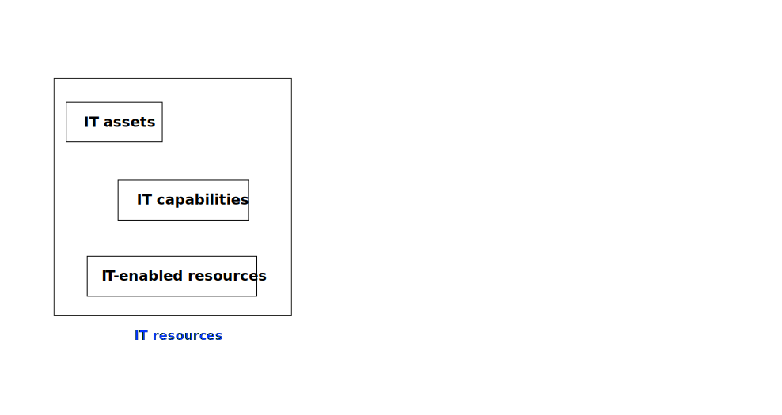
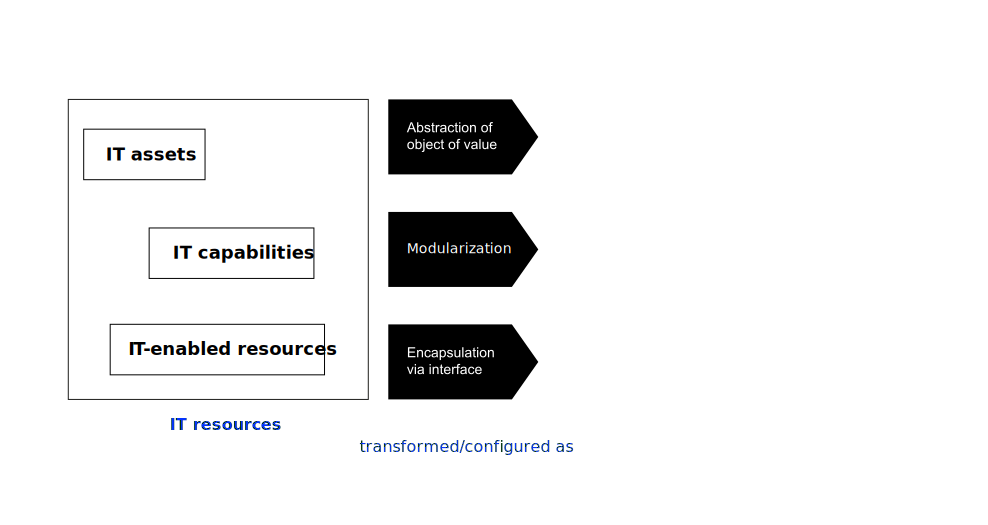
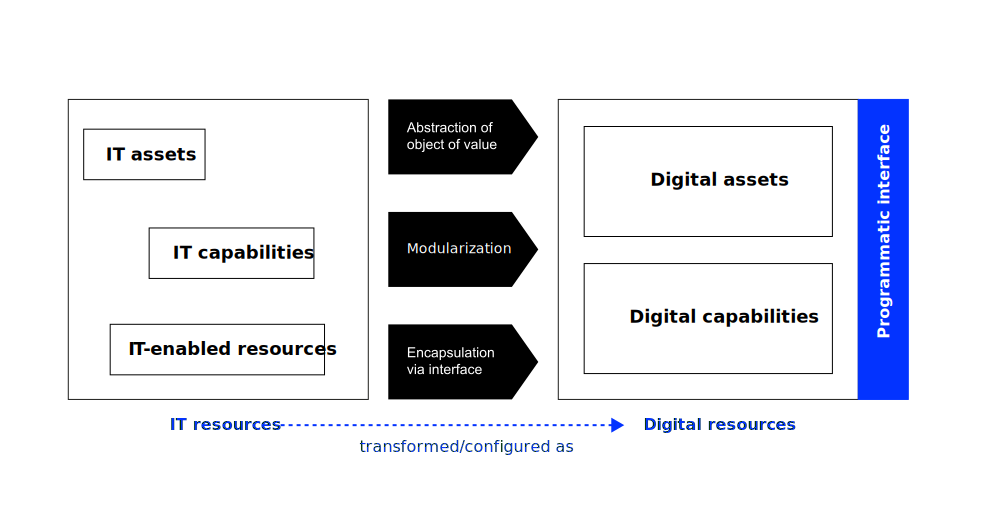

Primary business objectives
According to Cannon (2020), stakeholders typically define value through:
- Revenue/value creation
- Cost optimization
- Risk mitigation
Business Value Creation with IT (BVC)
Neu-Ulm University of Applied Sciences
February 10, 2026
After this session, you should be able to:
Let’s define some core terms.
IT resources are the foundational technological components that organizations leverage.
These include:
To create IT-enabled resources organizations need to integrate IT assets, IT capabilities and complementary organizational resources in a way that they create synergies.
Now what’s the difference between IT asset and a digital asset?



Having digital resources is necessary — but not sufficient.
The question is: can an organization adapt its resource base to keep creating value?
The resource-based view supports that firms may achieve a competitive advantage based on their bundles of resources and capabilities (Peteraf et al., 2013; Wade & Hulland, 2004).
The dynamic capabilities (DC) view argues that firms have to evolve their resource and capability base in order to ensure a sustained competitive advantage (Peteraf et al., 2013).
It distinguishes between two types of resources.
DCs represent an organization’s ability to purposefully create, extend, or modify its resource base to address rapidly changing environments (Teece, 2014).
Dynamic capabilities indicate that organisations need to continually adapt their IT resources.
But how do we define and measure the value that results from these investments?
Think of an IT system you use daily.
What value does it create — and for whom?
We see the computer age everywhere except in the productivity statistics. Robert Solow, 1987
Despite massive IT investments, empirical evidence for productivity gains remained elusive for decades — a phenomenon known as the IT productivity paradox (Brynjolfsson, 1993).
This paradox motivates a central question of this course: Under what conditions do IT investments actually create business value — and how can we ensure they do?
Value created by IT is—in a business context—usually referred to as IT/IS business value.
IS business value is the impact of investments in particular IS assets on the multidimensional performance and capabilities of economic entities at various levels, complemented by the ultimate meaning of performance in the economic environment. Schryen (2013, p. 141)
The ultimate meaning of performance refers to what is subsequently derived if the outcome is exploited, e.g.
Your CEO asks: “Was our €2M ERP investment worth it?”
How do you respond?
If usage is the missing link, then understanding adoption and effective use becomes essential for any attempt to determine and measure IT business value.
According to Kohli & Grover (2008), organizations struggle to articulate the full business value of IT beyond cost savings.
Challenges of IT value determination and subsequent realization include:
CIOs must first understand how business stakeholders define value. Usually it is based on their highest priority business objectives. Cannon (2020)
This implies that
According to Cannon (2020), stakeholders typically define value through:
IT investments can contribute to firm performance through revenue enhancement mechanisms (Melville et al., 2004b), such as:
Metrics to quantify value potential are, e.g.:
Strategic IT investments yield cost benefits through process optimization rather than simple cost-cutting (Mithas et al., 2011), such as:
Options to quantify the scope of cost optimizations are, e.g.:
Investments in IT can significantly reduce the likelihood and financial impact of risks by enhancing security, compliance, resilience and operational stability. They mitigate, e.g.:
Options to quantify positive outcomes of IT investments on risk mitigation:
Adopting a balanced scorecard approach (Kaplan & Norton, 2004), a measurement framework should consider following insights:
Before assessing the business value of IT solutions, following questions should be considered:
Ward & Daniel (2006) advocates for a mixed-method approach to IT value assessment reflected by balanced IT value scorecards.
Quantitative:
Qualitative:
Your CFO says: “IT is just a cost center.”
You have 60 seconds. Go.
Value messages need to be tailored to business stakeholders (Peppard, 2016), such as
C-Suite:
Business unit leaders:
End users:
Built a rich business case based on the insights you have gained:
Ward & Daniel (2006) discusses a set of tools and frameworks that many organisations are using to increase the benefits realised from their investments. These have great potential to enrich the development of IT business cases.